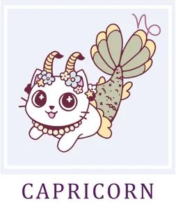

Козерог/Capricorn
Год не станет временем ослепительных триумфов, но и в пугающую черную полосу не превратится. Это период
устойчивого, пусть и не быстрого, движения вперед. Ваша врожденная рассудительность станет главным козырем.
Продолжайте обдумывать каждый шаг, избегая резких движений и крайностей. Кардинальных и мгновенных перемен ждать
не стоит, но если вы выберете одну ключевую цель и будете терпеливо к ней двигаться, то к концу года сможете по
праву гордиться результатом.
Начало года выдастся непростым, а январь и вовсе станет испытанием на прочность. Главная проблема будет
скрываться в вашем собственном настроении. Прислушайтесь к себе: хандра и раздражительность могут больно ударить
и по отношениям с близкими, и по рабочей атмосфере, рискуя оставить вас в одиночестве. Самое время хорошо
отдохнуть — возможно, стоит взять отпуск. Но организовать его нужно с умом: наполнить позитивными, яркими
эмоциями, новыми впечатлениями. Это зарядит вас оптимизмом и даст силы для рывка.
С конца февраля и до апреля будет преобладать влияние позитивных тенденций. Положение стабилизируется практически
во всех сферах: личная жизнь наладится, работа пойдет своим чередом, а финансовые поступления будут стабильными
и своевременными. Главное — не создавайте проблем себе сами. Не давайте невыполнимых обещаний, избегайте долгов
и постарайтесь окружить заботой тех, кого любите. Именно от вашей способности дарить душевное тепло будет
зависеть очень многое.
Период с мая по август вновь потребует выдержки, и здесь вы во многом окажетесь архитектором собственных
трудностей. Вам будет страстно хотеться перекроить мир и исправить всех вокруг, но, увы, это не всегда возможно.
Вместо того чтобы лбом пробивать стены, попробуйте проявить гибкость и адаптироваться к обстоятельствам. И
тогда, глядишь, жизнь сама начнет налаживаться.
Конец года не поразит воображение блеском, но и здесь найдется точка приложения сил. Сосредоточьтесь на работе —
именно здесь вы сможете усилием воли и разума изменить ситуацию к лучшему. Особенно если будете искать новых
союзников, а не конфликтовать со старыми. В личной жизни важно ослабить хватку: не давите на близких, дайте им
немного свободного пространства. Они скоро сами осознают, как вы прекрасны, и постараются наладить контакт. А
вам пока стоит погрузиться в то, что приносит искреннюю радость, — это станет вашим источником сил и
умиротворения.